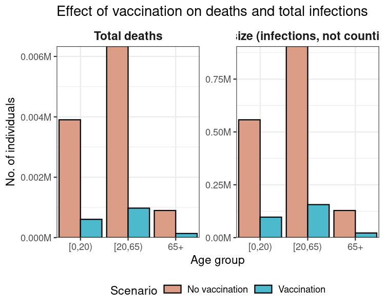

Modelling leaky vaccination and hospitalisation outcomes with Vacamole
Source:vignettes/vacamole.Rmd
vacamole.RmdNew to epidemics? It may help to read the “Get started” and “Modelling a vaccination campaign” vignettes first!
Vacamole is a deterministic, compartmental epidemic model built by Kylie Ainslie and others at RIVM, the Dutch Public Health Institute for the Covid-19 pandemic, with a focus on scenario modelling for hospitalisation and vaccination (Ainslie et al. 2022).
Vacamole was implemented as an R package, and the source code can be found on GitHub. Some versions have been used to generate scenarios for the ECDC Covid-19 Scenario Hub.
The original model has 8 conceptual compartments - four epidemiological compartments: susceptible, exposed, infectious, and recovered (S, E, I, R respectively), three hospitalisation compartments: hospitalised, in intensive care, and returning from intensive care to regular hospital care (H, ICU, ICU2H), and death - see the manuscript describing them here. Only infected individuals can enter the hospitalisation or death compartments.
Individuals from the susceptible compartment may be vaccinated partially (\(V_1\)) or fully (\(V_2\); assuming a two dose regimen), with each dose reducing their probability of being infected, and of being hospitalised or dying.
Modifications for epidemics
We have made some modifications to the ODE model of Vacamole in order to make it more general and thus potentially more applicable to a wider range of settings.
Specifically,
We have dropped the ICU and ICU2H compartment as this is potentially less relevant to a context in which intensive care capacity is low.
We have added transitions from the infectious (I) and hospitalised (H) compartments to death (D), as this may be a more general assumption when hospital capacity is low (relatively more I → D) or when treatments are poor (relatively more H → D).
-
We assume, in a first pass implementation that vaccination primarily reduces adverse outcomes, by modification to the transition rates (\(\beta_V,\eta_{V},\omega_V\)):
\(\beta_V\): The transmission rate \(\beta\) for individuals in the fully vaccinated compartment \(V_2\);
\(\eta_{V}\): The hospitalisation rate \(\eta\) for fully vaccinated, infected individuals (\(I_V\) → \(H_V\));
\(\omega_V\): The mortality rate for all fully vaccinated individuals at any stage in or post infection (I, or H).
The details of the ODE system for the version of Vacamole included in epidemics can be found at the end of this page.
Prepare population and initial conditions
Prepare population and contact data.
Code
# load contact and population data from socialmixr::polymod
polymod <- socialmixr::polymod
contact_data <- socialmixr::contact_matrix(
polymod,
countries = "United Kingdom",
age.limits = c(0, 20, 65),
symmetric = TRUE
)
# prepare contact matrix
contact_matrix <- t(contact_data$matrix)
# prepare the demography vector
demography_vector <- contact_data$demography$population
names(demography_vector) <- rownames(contact_matrix)Prepare initial conditions for each age group. The Vacamole model has 11 compartments and therefore requires a matrix with 11 columns.
Code
# initial conditions
initial_i <- 1e-6
# // 0| 1| 2|3| 4|5| 6|7| 8|9|10
# // S|V1|V2|E|EV|I|IV|H|HV|D|R
# make initial conditions - order is important
initial_conditions <- c(
S = 1 - initial_i,
V1 = 0, V2 = 0,
E = 0, EV = 0,
I = initial_i, IV = 0,
H = 0, HV = 0, D = 0, R = 0
)
initial_conditions <- rbind(
initial_conditions,
initial_conditions,
initial_conditions
)
# assign rownames for clarity
rownames(initial_conditions) <- rownames(contact_matrix)Prepare the time in days over which to model the epidemic, with the outbreak beginning at day zero.
Code
epidemic_days <- 300Prepare a population as a population class object.
Code
uk_population <- population(
name = "UK",
contact_matrix = contact_matrix,
demography_vector = demography_vector,
initial_conditions = initial_conditions
)Prepare a two dose vaccination campaign
We prepare a two-dose vaccination campaign by concatenating two single dose vaccination regimes, i.e., applying the function c() to two vaccination objects.
It is possible to combine multiple vaccination objects together using c() — the only limitation is that all vaccination regimes combined in this way must have the same number of demographic groups. It is possible to add a single dose to a two-vaccination regime by using c() on two vaccination objects with two and one dose, respectively.
Code
# prepare a two dose vaccination regime for a single age group
# prepare the first dose
dose_1 <- vaccination(
name = "two-dose vaccination", # name given to first dose
nu = matrix(1e-2, nrow = 3),
time_begin = matrix(30, nrow = 3),
time_end = matrix(epidemic_days, nrow = 3)
)
# prepare the second dose with a 30 day interval in start date
dose_2 <- vaccination(
name = "two-dose vaccination", # name given to first dose
nu = matrix(1e-2, nrow = 3),
time_begin = matrix(60, nrow = 3),
time_end = matrix(epidemic_days, nrow = 3)
)
# use `c()` to combine the two doses
double_vaccination <- c(dose_1, dose_2)
# print to visualise
double_vaccination
#>
#> Vaccination name:
#> Begins at:
#> dose_1 dose_2
#> [1,] 30 60
#> [2,] 30 60
#> [3,] 30 60
#>
#> Ends at:
#> dose_1 dose_2
#> [1,] 300 300
#> [2,] 300 300
#> [3,] 300 300
#>
#> Vaccination rate:
#> dose_1 dose_2
#> [1,] 0.01 0.01
#> [2,] 0.01 0.01
#> [3,] 0.01 0.01We prepare a dummy vaccination regime of no vaccination against which to compare the two-dose vaccination campaign. This is done by using the no_vaccination() function and specifying the number of doses (here, 2 doses).
Code
# prepare a null vaccination regime with two doses
# use the convenience function `no_vaccination()`
no_vaccination <- no_vaccination(population = uk_population, doses = 2)Model epidemic using Vacamole
First, we run the model with no vaccination. The model’s default parameters are:
Transmissibility (\(\beta\),
transmissibility): 0.186, resulting from an \(R_0\) = 1.3 and an infectious period of 7 days, given that \(\beta = R_0 / \text{infectious period}\).Infectiousness rate (\(\sigma\),
infectiousness_rate): 0.5, assuming a pre-infectious period of 2 days, given that \(\sigma = 1 / \text{pre-infectious period}\).Hospitalisation rate (\(\eta\),
hospitalistion_rate): 1.0 / 1000, assuming that one in every thousand infectious individuals is hospitalised.Mortality rate (\(\omega\),
mortality_rate): 1.0 / 1000, assuming that one in every thousand infectious and hospitalised individuals dies.Recovery rate (\(\gamma\),
recovery_rate): 0.143, assuming an infectious period of 7 days, given \(\gamma = 1 / \text{infectious period}\).Susceptibility reduction from vaccination (
susc_reduction_vax): 0.2, assuming a 20% reduction in susceptibility for individuals who are doubly vaccinated.Hospitalisation reduction from vaccination (
hosp_reduction_vax): 0.2, assuming a 20% reduction in hospitalisation for individuals who are doubly vaccinated.Mortality reduction from vaccination (
mort_reduction_vax): 0.2, assuming a 20% reduction in mortality for individuals who are doubly vaccinated.
Code
data <- model_vacamole_cpp(
population = uk_population,
vaccination = no_vaccination, # note custom no_vaccination object
time_end = epidemic_days
)Next we run the model with a two dose vaccination regime.
Code
data_vaccination <- model_vacamole_cpp(
population = uk_population,
vaccination = double_vaccination, # note custom object for two doses
time_end = epidemic_days
)Visualise model outcomes
First, we calculate the total number of infections resulting in recoveries and deaths over the course of the simulation; this is the epidemic’s final size.
Code
# collect data from the two scenarios
data_scenarios <- list(data, data_vaccination)
# get deaths and recoveries from infection
data_scenarios <- Map(
data_scenarios, c("no_vax", "vax"),
f = function(df, sc) {
df_ <- distinct(df, demography_group)
# get total deaths per group
df_$total_deaths <- filter(
df, time == max(time), compartment == "dead"
) %>% pull(value)
# get total recoveries per group using helper function `epidemic_size()`
# do not count dead
df_$total_recovered <- epidemic_size(df, include_deaths = FALSE)
# add scenario information
df_$scenario <- sc
# return data
df_
}
)
# collect data
data_scenarios <- bind_rows(data_scenarios)
# transform to long format
data_scenarios <- pivot_longer(
data_scenarios,
cols = c("total_deaths", "total_recovered"),
names_to = "measure"
)Code
ggplot(data_scenarios) +
geom_col(
aes(demography_group, value, fill = scenario),
position = "dodge",
colour = "black"
) +
facet_wrap(
facets = vars(measure),
scales = "free_y",
labeller = labeller(
measure = c(
total_deaths = "Total deaths",
total_recovered = "Epidemic size (infections without deaths)"
)
)
) +
scale_fill_discrete_qualitative(
palette = "Dynamic",
labels = c("No vaccination", "Vaccination"),
name = "Scenario",
na.value = "lightgrey"
) +
scale_y_continuous(
labels = label_comma(
scale = 1e-6, suffix = "M"
)
) +
theme_bw() +
theme(
legend.position = "bottom",
legend.key.height = unit(2, "mm"),
strip.background = element_blank(),
strip.text = element_text(
face = "bold",
size = 11
)
) +
expand_limits(
x = c(0.5, length(unique(data_scenarios$demography_group)) + 0.5)
) +
coord_cartesian(
expand = FALSE
) +
labs(
x = "Age group",
y = "No. of individuals",
title = "Effect of vaccination on deaths and total infections"
)
Finally, we can compare the peak of hospital bed occupancy in each scenario — this can be a rough indication of how much hospital capacity would be required if a pandemic of these characteristics were to occur, as well as another way to examine the effect of vaccination in reducing this requirement.
Code
# collect data from the two scenarios
data_scenarios <- list(data, data_vaccination)
peak_hospital_occupancy <- vapply(data_scenarios, function(df) {
# get highest hospital occupancy
# first get total hospitalisations among vaccinated and un- or part-vacc.
df <- filter(
df,
grepl(
pattern = "hospitalised", x = compartment,
fixed = TRUE
)
) %>%
# summarise all hospitalised over time, aggregating away age groups
summarise(
total_hosp = sum(value), .by = "time"
) %>%
# filter for the time point with highest hospital occupancy
filter(total_hosp == max(total_hosp)) %>%
# get the value
pull(total_hosp)
}, FUN.VALUE = numeric(1))
# set names for comprehensibility
names(peak_hospital_occupancy) <- c("No vaccination", "Vaccination")
# show peak hospital occupancy in a readable format
format(peak_hospital_occupancy, big.mark = ",", digits = 1)
#> No vaccination Vaccination
#> "1,813" " 5"This example demonstrates that implementing vaccination can substantially reduce peak hospital occupancy (by about 100%) compared to a scenario in which no vaccines are deployed.
Vacamole ODE system for {epidemics}
The Vacamole ODE system adapted for {epidemics} is:
Susceptibles who are not vaccinated, or only partially vaccinated (considered unprotected) can transition to exposed and vaccinated:
\[dS = -\beta S(I+I_V) - \nu_1 S\]
Two sequential vaccination compartments, with a lower conversion rate from two-dose vaccinated individuals (considered to be protected) to exposed:
\[dV_1 = \nu_1S - \beta V_1(I+I_V) - \nu_2V_1\]
\[dV_2 = \nu_2V_1 - \beta_VV_2(I+I_V)\]
Two parallel exposed compartments, with similar conversion to infectious:
\[dE = \beta (S+V_1)(I+I_V) - \sigma E\]
\[dE_V = \beta_VV_2(I+I_V) - \sigma E_V\]
Two parallel infectious compartments, with lower hospitalisation and mortality rate for vaccinated:
\[dI = \sigma E - \gamma I - \eta I - \omega I\]
\[dI_V = \sigma E_V - \gamma I_V - \eta_{V} I_V - \omega_V I_V\]
Two parallel hospitalisation compartments, with a lower mortality rate for vaccinated:
\[dH = \eta I - \gamma H - \eta_2 H - \omega H\]
\[dH_V = \eta_{V} I - \gamma H_V - \omega_V H_V\]
Single recovered compartment:
\[dR = \gamma(I + H + I_V + H_V)\]
Single mortality compartment:
\[dD = \omega(I + H) + \omega_V(I_V + H_V)\]